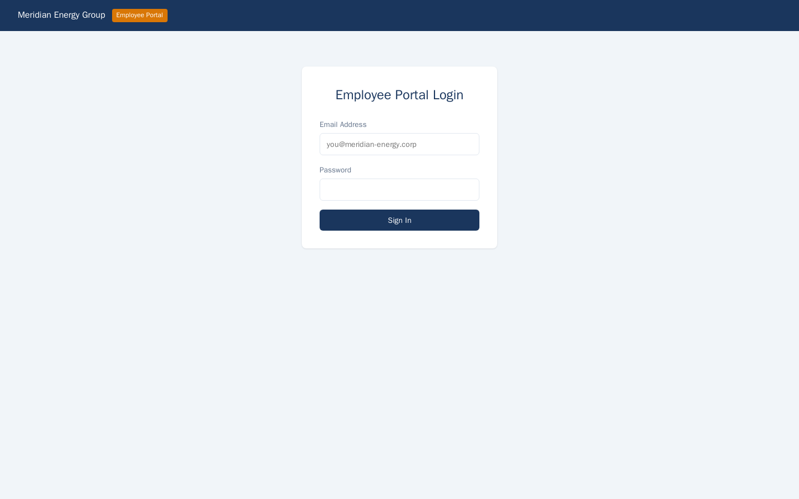
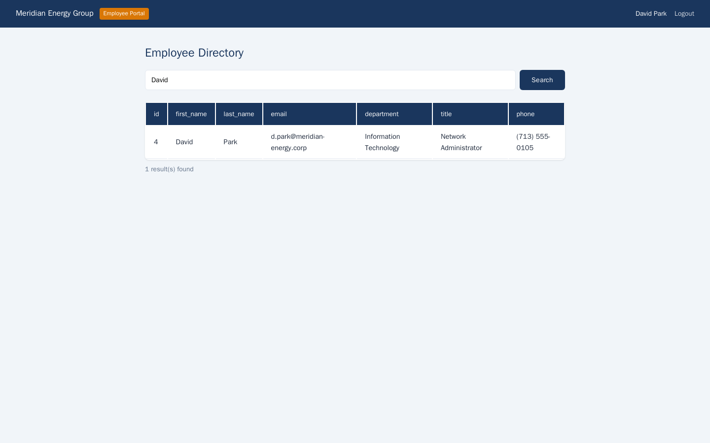
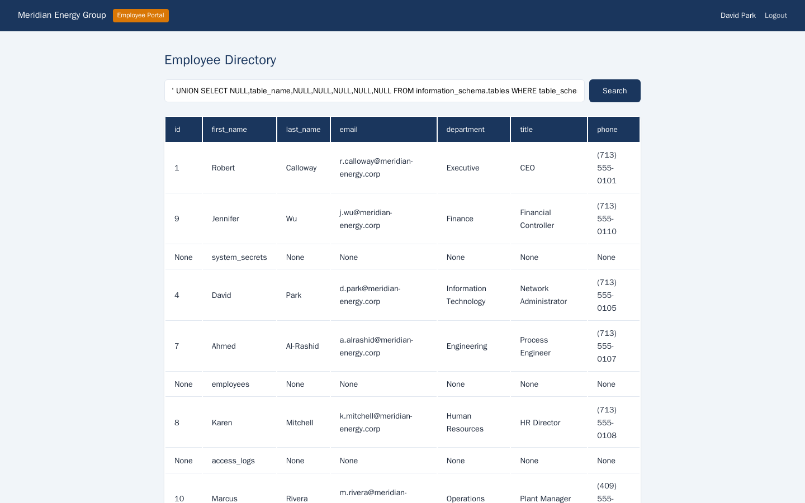

Exercise MEG2.1: Portal SQL Injection
Before You Begin
You should have completed the Chapter 2 Introduction, which describes the three web exploitation exercises in the Meridian Energy engagement. Your VPN must be connected. The employee portal credentials were discovered during reconnaissance and follow the same default password pattern identified in Chapter 1.
Scenario
Meridian Energy Group's employee portal includes a search function that lets staff look up colleagues by name. The search feature was built by an internal developer who concatenated user input directly into PostgreSQL queries without parameterization. Your objective is to exploit the SQL injection vulnerability to enumerate the database schema and extract the flag from a hidden system_secrets table.

Credentials:
| Username | Password | Context |
|---|---|---|
| d.park@meridian-energy.corp | David2024# | IT Staff member |
Targets:
| Hostname | IP Offset | Role |
|---|---|---|
| portal.meridian-energy.corp | +10 | Employee portal with vulnerable search |
| db.meridian-energy.corp | +11 | PostgreSQL database (not directly accessible) |
Database Access
The database server (db.meridian-energy.corp) is not directly accessible from your position. You interact with it indirectly through the SQL injection point in the employee portal. All database queries are executed by the portal's backend.
Your Objectives
- Log in to the employee portal with the provided credentials
- Locate the employee search function
- Test the search input for SQL injection
- Determine the number of columns returned by the original query
- Use UNION SELECT to enumerate the database schema
- Discover and extract data from the
system_secretstable - Find and submit the flag in
OCR{...}format
Difficulty: Intermediate Estimated time: 35 minutes
Background: UNION-Based SQL Injection
Beyond Authentication Bypass
In Chapter 1, you saw how SQL injection can bypass login forms. UNION-based injection goes further: it extracts arbitrary data from the database by appending a second SELECT statement to the original query.
How UNION SELECT Works
The SQL UNION operator combines the results of two SELECT statements into a single result set. For a UNION to succeed, both SELECT statements must return the same number of columns with compatible data types.
If the original query is:
An attacker who controls user_input can inject:
The resulting query becomes:
SELECT first_name, last_name, department FROM employees WHERE name LIKE '%'
UNION SELECT table_name, column_name, data_type FROM information_schema.columns -- %'
The database executes both SELECT statements and returns the combined results. The attacker's injected query reads from information_schema.columns, which catalogs every table and column in the database.
Finding the Column Count
Before you can use UNION SELECT, you must determine how many columns the original query returns. Two techniques work:
ORDER BY method - Increment the column number until the query errors:
' ORDER BY 1 -- (works)
' ORDER BY 2 -- (works)
' ORDER BY 7 -- (works)
' ORDER BY 8 -- (error: column 8 does not exist)
The error on 8 means the query returns 7 columns.
UNION NULL method - Add NULL placeholders until the query succeeds:
' UNION SELECT NULL -- (error: different column count)
' UNION SELECT NULL,NULL -- (error)
' UNION SELECT NULL,NULL,NULL,NULL,NULL,NULL,NULL -- (success: 7 columns)
PostgreSQL Information Schema
PostgreSQL stores metadata about its own structure in the information_schema:
| View | Contents |
|---|---|
information_schema.tables |
All table names and schemas |
information_schema.columns |
All column names, data types, and table associations |
Query these views through your injection point to map the entire database.
Tools You Will Need
| Tool | Purpose | Example |
|---|---|---|
curl |
Send HTTP requests with injection payloads | curl -s -b cookies.txt "http://portal/dashboard?search=test" |
| Browser | Visual inspection of search results | Navigate to the portal |
Flag Progress
The flag has 1 part stored in the system_secrets table.
| Part | Source | Token | Found? |
|---|---|---|---|
| 1 | system_secrets table in the PostgreSQL database |
________ |
Flag format: OCR{...}
Solution Walkthrough
Independent Mode
You know the target, the credentials, and the table name. Try to extract the flag on your own before reading the walkthrough.
Step 1: Add Hostname and Log In
Add the portal hostname to your hosts file if not already present.
Kali - Add the portal hostname to /etc/hosts
Log in with the IT Staff credentials.
Kali - Log in to the employee portal
If the login succeeds, you should see dashboard content in the response. The -c cookies.txt flag saves the session cookie for subsequent requests.
Step 2: Locate the Search Function
Explore the portal to find the employee search feature.
Kali - Access the portal dashboard
The dashboard includes an employee directory search. Submitting a query renders results through the search parameter on the dashboard itself, so the search endpoint is /dashboard?search=<query> rather than a separate page.
Kali - Test the search function with a normal query
You should see search results containing employee records. Note the format: how many fields are displayed per result (name, email, department, title, etc.). The number of visible fields gives you a starting estimate for the column count.

Step 3: Test for SQL Injection
Inject a single quote to break the SQL query syntax.
Kali - Test with a single quote
If the response contains a database error message (referencing "syntax error," "PostgreSQL," "unterminated string"), the input is being concatenated directly into a SQL query. If you see a generic error page, the application may be catching exceptions, but the vulnerability could still exist.
Step 4: Determine the Column Count
Use the ORDER BY technique to find how many columns the original query returns.
Kali - Test ORDER BY with increasing column numbers
Increment the number until you get an error:
Kali - Continue incrementing
Kali - Test one beyond the limit
When ORDER BY 7 succeeds but ORDER BY 8 produces an error, the query returns 7 columns. Record this number; you need it for every UNION SELECT payload.
Step 5: Confirm UNION SELECT Works
Test a basic UNION SELECT with the correct number of NULL columns.
Kali - UNION SELECT with 7 NULL columns
If the query succeeds without errors, your column count is correct. You may see an empty row in the results, or the NULLs may render as blank fields. The important thing is that no error occurred.
Now test which columns display string data by replacing NULLs with test strings one at a time:
Kali - Identify which columns render as visible text
Look at the response to see which of the test strings (col1 through col7) appear in the rendered output. The visible columns are the ones you will use to exfiltrate data.
Step 6: Enumerate Tables in the Database
Use information_schema.tables to discover all tables.
Kali - Extract table names from information_schema
The WHERE table_schema='public' filter excludes PostgreSQL system tables and shows only application-specific tables. Read through the results and look for interesting table names. You should see the system_secrets table among the results.

If the first column is not visible in the rendered output, move table_name to a column position you know is displayed:
Kali - Try table_name in a different column position
Step 7: Enumerate Columns in system_secrets
Now that you know the target table, find out what columns it contains.
Kali - Extract column names from the system_secrets table
The response shows each column name and its data type. Record the column names; you need them for the final extraction query.
Step 8: Extract the Flag from system_secrets
With the table name and column names known, extract the data.
Kali - Extract all rows from system_secrets
Adjust secret_name and secret_value to match the actual column names you discovered in the previous step. The flag in OCR{...} format should appear in one of the returned rows.
If the column names differ from the example, adapt your query accordingly:
Kali - Search the extracted data for the flag
Submit the flag in the platform.
Record Your Findings
Injection point:
___________________________Column count:
___Visible columns (positions):
___Tables discovered:
Table Name Interesting? system_secrets columns:
___________________________Flag:
OCR{...}
Analysis Questions
1. Why must a UNION SELECT have the same number of columns as the original query? What happens if the count is wrong?
Reveal Answer
The SQL UNION operator combines two result sets into a single table. For the combination to work, both SELECT statements must produce rows with the same number of columns. If the column counts differ, the database cannot align the rows and returns an error (e.g., "each UNION query must have the same number of columns"). The attacker must determine the exact column count before any data extraction is possible, which is why the ORDER BY or NULL-padding technique is always the first step in UNION-based injection.
2. The injection payload used a double-dash comment (--) at the end. What purpose does the comment serve, and what would happen without it?
Reveal Answer
The double-dash (--) is a SQL comment that causes the database to ignore everything after it on the same line. In the vulnerable query, the original code appends a closing quote and additional syntax (like %') after the user's input. Without the comment, the injected UNION SELECT would be followed by the original query's remaining syntax, producing a syntax error. The comment effectively truncates the rest of the original query, allowing the injected portion to execute cleanly. Some databases require a space after -- for it to be recognized as a comment.
3. The application used string concatenation to build SQL queries. What is the correct way to handle user input in database queries, and why does it prevent injection?
Reveal Answer
Parameterized queries (also called prepared statements) are the correct approach. Instead of embedding user input directly in the query string, the application defines the query structure with placeholders: SELECT * FROM employees WHERE name LIKE $1. The database receives the query template and the user input as separate values. Because the database knows that the parameter is always data (never SQL code), injected syntax like ' UNION SELECT is treated as a literal search string rather than SQL commands. Every modern database driver supports parameterized queries, and there is no performance penalty for using them.
4. You discovered the system_secrets table by querying information_schema.tables. What other reconnaissance could an attacker perform through the information_schema?
Reveal Answer
The information_schema exposes the complete database structure. An attacker can enumerate every table (information_schema.tables), every column and its data type (information_schema.columns), every database user and their privileges (information_schema.role_table_grants), and every constraint including foreign keys (information_schema.table_constraints). With this metadata, the attacker can systematically extract data from any table in the database. Beyond information_schema, PostgreSQL-specific catalogs like pg_user and pg_shadow may expose password hashes, and pg_settings reveals server configuration including file paths and memory limits.
Key Takeaways
- UNION-based SQL injection extracts arbitrary data from the database. Once you find an injection point and determine the column count, you can read any table the database user has access to.
- The column count must match exactly. ORDER BY and NULL-padding are the standard techniques for determining the correct number.
- information_schema is the attacker's roadmap. Querying it reveals every table, column, and data type in the database.
- String concatenation in SQL queries is the root cause. Parameterized queries eliminate SQL injection entirely by separating code from data.
- A low-privilege application account can still access sensitive tables. Unless the database enforces row-level security or restricts access to specific schemas, any query the application can run, the attacker can run through the injection point.
What is Next
In Exercise MEG2.2, you will attack the HR portal's authentication system. The portal uses JSON Web Tokens (JWTs) with a weak signing secret. You will decode the token, crack the secret, forge an admin token, and access the internal API.